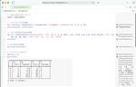

電通総研 テックブログ
https://tech.dentsusoken.com/
電通総研が運営する技術ブログ
フィード

世界で一番くわしい、Pandas ⇔ TabularData変換表
電通総研 テックブログ
こんにちは、電通総研、Xイノベーション本部 AIトランスフォーメーションセンター所属の徳原光です。 以前、AndroidスマホでAIモデルを運用するために、Pandasの特徴量計算のコードをKotlin DataFrameを使用してKotlinに移植するための変換表を公開しました。 今度は、特徴量計算のコードをSwiftに移植するため、pandasとTabularDataの変換表を作成しました。 Pandas ⇔ TabularData変換表 自分がよく使用していた処理から（Pandas的に）基本的なものを抜粋しています。無理やり表にしているので改行が変ですがご容赦ください。 処理 panda…
5日前
Amazon EKS マネージド型ノードグループの更新動作におけるEviction APIの実行状況を確認する方法
電通総研 テックブログ
こんにちは。X（クロス）イノベーション本部クラウドイノベーションセンターの柴田です。 この記事ではAmazon EKS マネージド型ノードグループの更新動作におけるEviction APIの実行状況を確認する方法をご紹介します。 背景・課題 Eviction APIの実行状況を確認する方法 デモ おわりに 背景・課題 Amazon EKS マネージド型ノードグループでは、ノードグループのバージョンや設定を更新すると、 マネージド型ノードの更新動作 に記載された手順に従い、自動的に各ノードをローリングアップデートで再作成してくれます。 マネージド型ノードグループの更新動作は以下の4つのフェーズか…
12日前

システム開発におけるエラーの「ヨコテン」ってなんだ？
電通総研 テックブログ
金融ソリューション事業部 事業推進ユニット の 石沢です。ソフトウェア開発者の皆さんは「横展開調査」「水平展開調査」「ヨコテン」などの言葉を聞いたことはありますか？ （本記事では以下「横展開調査」と記述します） 部門の勉強会で、改めて「横展開調査」について整理したので、本記事ではその内容をご紹介します。 所属部門ではわりとカジュアルに「横展開調査」という言葉がよく使われているのですが、人によって理解の幅に違いがあるようだったので、勉強会で取り扱ってみました。勉強会ではわかっている人、わかっていない人それぞれの理解の解像度が上がったようです。またよりよい方法についての議論も盛り上がりましたが、そ…
17日前
AWS CodeDeployで「Primary taskset target group must be behind listener」によりBlue/Greenデプロイに失敗した原因と解決方法
電通総研 テックブログ
みなさん、こんにちは。電通総研 金融ソリューション事業部の鈴木です。 今回は、AWS CodeDeployでAmazon ECSに対してアプリケーションをBlue/Greenデプロイした際に発生したエラーについて、原因と解決方法を記載します。 アプリケーションの構成 発生した事象 原因 解決方法 まとめ アプリケーションの構成 今回紹介するアプリケーションの全体構成は、以下のとおりです。 （今回の記事に関係しない周辺リソースは省略しています） アプリケーションはECSで管理しており、ロードバランサーにApplication Load Balancer(ALB)を配置しています。 デプロイについ…
19日前
電通総研ArchitectMeetup開催決定！
電通総研 テックブログ
皆さんこんにちは！コーポレート本部システム推進部の佐藤太一です。 突然ですが、8月23日に完全オフラインイベントを開催します！その名も「電通総研 Architect Meetup」です。電通総研のアーキテクトが登壇し、普段の仕事ぶりについてお話する貴重な機会です。 イベントの前半では、事業部門の若手アーキテクトがそれぞれの仕事について紹介します。普段は外部でお話ししない2人なので、このレアな機会をお見逃しなく！登壇者に直接質問できる時間も設けていますので、電通総研について気になっている方はぜひご参加ください。 後半は、XI本部のアーキテクトである米久保さんと金融ソリューション事業部のアーキテク…
22日前
【UE5】音に応じてオブジェクトやマテリアルを変化させる方法（後編）
電通総研 テックブログ
こんにちは、電通総研金融ソリューション事業部の飯田です。 前編では、音に応じて位置、回転、スケールを変化させる方法をご紹介しました。 この記事では、音に応じてマテリアルを変化させる方法をご紹介します。 前編の続きになっていますので、まだご覧になっていない方は前編もご一読ください。 実行手順 マテリアルを作成、ブループリントに適用する ブループリントで、動的なマテリアルを作成、初期設定する ブループリントで、マテリアルを動的に変化する 1. マテリアルを作成、ブループリントに適用する コンテンツブラウザ上で右クリックを行い、「マテリアル」を選択します。 マテリアルが作成されました。 マテリアルを…
1ヶ月前
【UE5】音に応じてオブジェクトやマテリアルを変化させる方法（前編）
電通総研 テックブログ
こんにちは、電通総研金融ソリューション事業部の飯田です。 今回は、Unreal Engine 5で、音に応じてオブジェクトの位置、回転、スケールやマテリアルの表現を変化させる方法をご紹介します。 前編で位置、回転、スケールを変化させる方法、後編でマテリアルを変化させる方法をご紹介します。 検証環境 / ソフト OS：Windows11 GPU：NVIDIA GeForce RTX 4090 Game Engine：Unreal Engine 5.2.1 実行手順 音データを用意する ブループリントを作成する ブループリントに、コンポーネントを追加する ブループリントで、音楽を再生する ブループ…
1ヶ月前
Amazon CognitoでAPIGatewayに認証をつける(後編)
電通総研 テックブログ
こんにちは。コミュニケーションIT事業部 ITソリューション部の英です。 普段はWebアプリやスマホアプリの案件などを担当しています。あと、趣味でAIを勉強しています。 いつもはAI関連の記事を書いていますが、今回はAWSの認証サービスであるAmazon Cognitoについて検証します。 近々案件で使いそうなので、そのための予習です。 さて、前回はトークン発行までのフローを解説しました。 今回はこれらのトークンを使用して、AWS上のリソースに対するアクセス制御を行うための設定をしていきます。 →前回の記事 今回の構成はこちらです。 (引用元：ユーザープールと共に API Gateway と …
1ヶ月前
mysqldump で Aurora Serverless v1 から v2 にデータ移行した
電通総研 テックブログ
こんにちは。コーポレート本部 サイバーセキュリティ推進部の耿です。 大好きだった Aurora Serverless v1 が 2024/12/31 をもってサポート終了ということで、泣く泣く Aurora Serverless v2 へ移行しました。公式ではクラスタのアップグレードを使用した手順が紹介されていますが、今回はそれではなく Aurora Serverless v2 クラスタを新規に作成し、mysqldump によるデータ移行という方法を取りました。その概要を書き残します。 Aurora Serverless v1 の好きなところ なぜ mysqldump を使ったのか 作業概要 …
1ヶ月前
Microsoft Build 2024 現地参加してきました！
電通総研 テックブログ
Microsoft Buildとは？ Microsoft Buildのプログラム 注目アップデート情報の紹介 アップデート情報のサマリ Azure AI系のアップデート情報 Azure OpenAI Service Azure AI Studio Phiシリーズ Windows Copilot Runtime アプリケーションサービス系のアップデート情報 Azure Functions データプラットフォーム系のアップデート情報 Microsoft Fabric Azure Cosmos DB Azure Database for PostgreSQL ローコードツールのアップデート情報 Co…
1ヶ月前
Blenderで作成したモデルとアニメーションを、FBX形式でUE5にインポートする方法
電通総研 テックブログ
こんにちは、電通総研金融ソリューション事業部の飯田です。 今回は、Blenderで作成したモデル、マテリアル、アニメーションを、FBX形式でUE5に取り込む方法をご紹介します。 UE内のエディターを用いてアニメーションを設定する手順については、こちらの記事を参考にしてください。 https://tech.dentsusoken.com/entry/ue_collision 検証環境 / ソフト OS：Windows11 GPU：NVIDIA GeForce RTX 4090 Blender：Blender4.0.2 Game Engine：Unreal Engine 5.2.1 実行手順 Bl…
1ヶ月前
Amazon CognitoでAPIGatewayに認証をつける(前編)
電通総研 テックブログ
こんにちは。コミュニケーションIT事業部 ITソリューション部の英です。 普段はWebアプリやスマホアプリの案件などを担当しています。あと、趣味でAIを勉強しています。 いつもはAI関連の記事を書いていますが、今回はAWSの認証サービスであるAmazon Cognitoについて検証します。 近々案件で使いそうなので、そのための予習です。 Amazon CognitoにはユーザープールとIDプールの2つのサービスがありますが、今回はユーザープールにフォーカスして記事を書きます。 詳細は公式リファレンスを参照してください。 → ユーザープールとIDプールの違いについて また、各案件でCognito…
1ヶ月前
Amazon EKSのWindowsノードを用いてUEアプリケーションを配信する 後編
電通総研 テックブログ
こんにちは、金融ソリューション事業部の孫です。 記事の前編では、Kubernetes上に必要なDockerイメージを作成しました。 今回は、EKSの構築に取り組み、KubernetesホスティングのUEアプリケーションを配信します。 はじめに 実施手順 開発環境 インフラ構造図 1. EKS環境の構築 ClusterとNodeGroupの作成 ECRアクセス権の追加 2. Kubernetes Device Plugins for DirectXのインストールとテスト 3. AWS ALB Ingress Controllerのインストール ALB Ingress Controller用のIA…
1ヶ月前
Amazon EKSのWindowsノードを用いてUEアプリケーションを配信する 前編
電通総研 テックブログ
こんにちは、金融ソリューション事業部の孫です。 前回の記事で、Amazon EKS（AWSが提供するKubernetesサービス、以下EKSと略）用のWindowsノードAMI（Amazon Machine Images、以下AMIと略）の構築方法について紹介しました。 今回は、このAMIを使用してWindowsノードを作成し、UnrealEngine（以下はUE）アプリケーションを配信する方法を説明します。 今回のUEアプリケーションサーバーはWindowsコンテナで実行され、PixelStreaming技術を使用してWebブラウザからアクセスできます。 従来のアプリケーションのインストール…
1ヶ月前
UEアプリ用のカスタムWindows Node AMIを作成する 後編
電通総研 テックブログ
こんにちは、金融ソリューション事業部の孫です。 前編では、Unreal Editorを含むWindowsコンテナイメージの構築を完了しました。 本記事では、前編で構築したコンテナイメージを利用するAmazon EKS（以下EKS）のWindows Node AMIを作成します。 EKSのドキュメントをよると、AWSはユーザー向けに最適化されたEKS optimized WindowsAMIを提供していることがわかりました。 このEKS optimized WindowsAMIにはEKSでの動作可能なミドルウェアがインストールされていますが、前編で構築したコンテナイメージをサポートするには不足し…
1ヶ月前
UEアプリ用のカスタムWindows Node AMIを作成する 前編
電通総研 テックブログ
こんにちは、金融ソリューション事業部の孫です。 本記事ではUEアプリ用のカスタムWindows Node AMIを作成します。 これまでの記事ではLinuxベースのノードで運用しておりました。 しかし、開発プロジェクトによってはWindowsノードは必須となるケースがあるので、その場合に本記事の知見が読者の皆様にご参考になれば幸いです。 本記事の内容は、前編と後編に分けて紹介します。 前編では、Unreal Editorを動作させるためのコンテナイメージの構築に焦点を当てています。 後編では、そのUnreal EditorコンテナイメージをWindows AMIに統合し、EKSでノードとして使…
1ヶ月前
Blenderで自作の3Dモデルにアーマチュアを追加して、アニメーションさせる
電通総研 テックブログ
こんにちは、電通総研金融ソリューション事業部の岡崎です。 今回は3Dモデルにアニメーションをつけるために、 Blenderを使用して、アセット内にアーマチュア（ボーン）を作成して アニメーションを動かすまでの作成方法をご紹介します。 検証環境/ツール OS：Windows 11 pro GPU：NVIDIA GeForce RTX 4070 Ti Blender：3.6.4 実装手順 アーマチュアの作成 アーマチュアの各ボーンの名称を変更 アーマチュアとメッシュの結合 アニメーションの作成 1. アーマチュアの作成 まずはアニメーションをする元となるアセットを用意します。 今回は簡易的に作った…
1ヶ月前
AITCの挑戦：Kaggle Home Creditコンペで学んだ技術と成果
電通総研 テックブログ
はじめに こんにちは、Xイノベーション本部 AITCの鴨谷です。 私はAITCのコンサルティングチームに所属しており、日々データ分析や機械学習モデルの開発に取り組んでいます。 今回は、AITCのチームで参加したKaggleのHome Credit-Credit Risk Model Stabilityコンペ(https://www.kaggle.com/competitions/home-credit-credit-risk-model-stability) についてお話しします。2024年4月から6月にかけて行われたこのコンペで、私たちのチームは81位に入り、銀メダルを獲得しました。 この記…
1ヶ月前
コンフォートゾーンを抜け出す
電通総研 テックブログ
グループ経営ソリューション事業部で、会計プロダクト「Ci*X Financials」の製品開発を担当している高崎です。 唐突ですが、皆さんは自身のスキルアップのために、どのようなことに取り組んでいますか？ 例えば、書籍を購入して自己学習をしたり、社内外の勉強会や研修に参加したり、自身が学んだことを誰かに教えたりなど様々なことに取り組んでいるかと思います。 これらの方法でもスキルアップは可能ですが、コンフォートゾーンを抜け出すということを意識して行動することで、より効果的にスキルアップが可能です。 コンフォートゾーンを抜け出すという行動について、私の実体験を交えて、紹介したいと思います。 コンフ…
1ヶ月前
k近傍法による多クラス分類
電通総研 テックブログ
こんにちは。コミュニケーションIT事業部 ITソリューション部の英です。 普段はWebアプリやスマホアプリの案件などを担当しています。あと、趣味でAIを勉強しています。 突然ですが、AIの勉強をしているとk-means法とk近傍法って混同しませんか？ 不意に尋ねられた際にぱっと答えられる自信がありません。 前回はk-means法について解説したので、今回はk近傍法の検証をしましょう。 k-means法：クラスタリング手法で、データをk個のグループに分ける、教師なし学習 k近傍法：あるデータ点を、その点に最も近いk個の既知のデータ点(近傍)の多数決で分類する、教師あり学習 → 前回の記事 この記…
1ヶ月前
UE5 MetaHumanのControlRigを使ってアニメーションを作成する方法
電通総研 テックブログ
こんにちは、電通総研金融ソリューション事業部の岡崎です。 今回はUE5のMetaHumanとControlRigを使って簡単なアニメーションを作成する方法を紹介します。 アニメーションを本格的にゼロから作るためには、本来はUE以外のツールを使用して作成することが一般的ですが、 簡単な動きの場合はUEだけで作ることができます。 本記事ではMetaHumanがお辞儀をしたり、既存のアニメーションにアレンジを加えて、しゃがみながら歩行する方法などを紹介します。 検証環境/ツール OS：Windows 11 pro GPU：NVIDIA GeForce RTX 4070 Ti CPU：i9-12900…
1ヶ月前
UE5 レベルシーケンスやShot機能を使った動画制作手順
電通総研 テックブログ
こんにちは、電通総研金融ソリューション事業部の岡崎です。 今回はUE5のレベルシーケンスを使用してデモ動画を作る方法を紹介します。 この記事では基礎的な内容として、アクターの配置方法や移動、アニメーションの設定方法の紹介を行います。 また、複数人で共同でレベルシーケンスを制作する際にコンフリクトが起こりにくい制作の方法として、 Shot機能を使用した方法なども紹介していきます。 検証環境/ツール OS：Windows 11 pro GPU：NVIDIA GeForce RTX 4070 Ti Game Engine：Unreal Engine 5.2.1 実装手順 レベルシーケンスファイルの作…
2ヶ月前
k-means法によるクラスタリングと可視化
電通総研 テックブログ
こんにちは。コミュニケーションIT事業部 ITソリューション部の英です。 普段はWebアプリやスマホアプリの案件などを担当しています。あと、趣味でAIを勉強しています。 突然ですが、AIの勉強をしているとk-means法とk近傍法って混同しませんか？ 不意に尋ねられた際にぱっと答えられる自信がありません。 なので、今回から2回に渡ってk-means法とk近傍法のそれぞれを実際に検証して身に付けようと思います。 k-means法：クラスタリング手法で、データをk個のグループに分ける、教師なし学習 k近傍法：あるデータ点を、その点に最も近いk個の既知のデータ点(近傍)の多数決で分類する、教師あり学…
2ヶ月前
LLMエージェントの実行結果をPrompt flowとAzure AI Studioのトレース機能で管理する
電通総研 テックブログ
はじめに Azure AI Studio とは Azure AI Studioのトレース機能 Azure AI Studioのトレース機能の使い方 Azure AI Studioの準備 ローカル環境での準備 トレース機能の使い方 エージェントワークフローでトレース機能を使ってみる 実装コード トレース結果を確認 トレース機能の便利な点まとめ こんにちは！Xイノベーション本部AIトランスフォーメーションセンター（AITC）の後藤です。 本記事では最近盛り上がりつつあるLLMエージェントの開発に便利なAzure AI StudioとPrompt flowを使ったトレース機能について紹介します。 は…
2ヶ月前
UE5でMixamoのアニメーションをMetaHumanに適応させる方法
電通総研 テックブログ
こんにちは、電通総研金融ソリューション事業部の岡崎です。 今回はMixamoというAdobeが提供している、3Dキャラクター用のアニメーションを使用して、UE5内のキャラクターにいろいろなアニメーションを適応させる方法をご紹介します。 さらにMixamoで見つけたアニメーションを、MetaHumanにも適応させる方法も併せてご紹介します。 検証環境/ツール OS：Windows 11 pro GPU：NVIDIA GeForce RTX 4070 Ti Game Engine：Unreal Engine 5.2.1 実装手順 Mixamo Converterのダウンロード Mixamoでアニメ…
2ヶ月前
LiveLinkを使ってMetahumanの顔をモーションキャプチャで動かす 後編
電通総研 テックブログ
こんにちは、電通総研金融ソリューション事業部の岡崎です。 前回の記事ではMetaHumanIdentityを使用してLiveLink動画を調整する手順まで説明しました。 この記事は前回の続きからになりますので、まだご覧になっていない方は、前編も是非ご一読ください！ 検証環境/ツール OS：Windows 11 pro GPU：NVIDIA GeForce RTX 4070 Ti Game Engine：Unreal Engine 5.2.1 iPhone14pro：IOS16.4.1 実装手順 LiveLinkを使用した撮影 UnrealEngineの準備 iPhoneで撮影した動画をインポー…
2ヶ月前
LiveLinkを使ってMetaHumanの顔をモーションキャプチャで動かす 前編
電通総研 テックブログ
こんにちは、電通総研金融ソリューション事業部の岡崎です。 今回はLive Link Face for Unreal EngineというiPhoneのアプリを使用して iPhoneのカメラで撮影した顔のアニメーションをキャプチャし、UnrealEngineのMetaHumanに適応させる方法を ご紹介します。 また、こちらの山下さんの記事では、Livelinkを用いてリアルタイムにMetaHumanを動かす方法が紹介されていますので、ぜひそちらもご覧ください。 本記事は前編後編に分かれており、この記事では手順4の「MetaHumanIdentityを使用してLiveLink動画を調整」までをご紹…
2ヶ月前
SageMakerのランダムカットフォレストで異常検知
電通総研 テックブログ
こんにちは。コミュニケーションIT事業部 ITソリューション部の英です。 普段はWebアプリやスマホアプリの案件などを担当しています。あと、趣味でAIを勉強しています。 前回に引き続き IoTデバイス(温度センサー)の異常検知 をテーマに記事を書いてみます。 前回の記事はManaged Apache Flinkを使用した閾値でのリアルタイム異常検知でした。 → 前回の記事 今回の記事では閾値(正解)を与えずに異常を検出する仕組みをご紹介します。 使用するのはSageMakerに搭載されているRCF(ランダムカットフォレスト)というアルゴリズムです。 ランダムカットフォレストとは？ ランダムカッ…
2ヶ月前
SpatialComputing入門Part3：現実空間の平面に3Dオブジェクトを配置する
電通総研 テックブログ
[VisionPro] SpatialComputing入門Part3：現実空間の平面に3Dオブジェクトを配置する
2ヶ月前
SpatialComputing入門Part2：3DオブジェクトにGestureを追加する
電通総研 テックブログ
[VisionPro] SpatialComputing入門Part2：3DオブジェクトにGestureを追加する
2ヶ月前